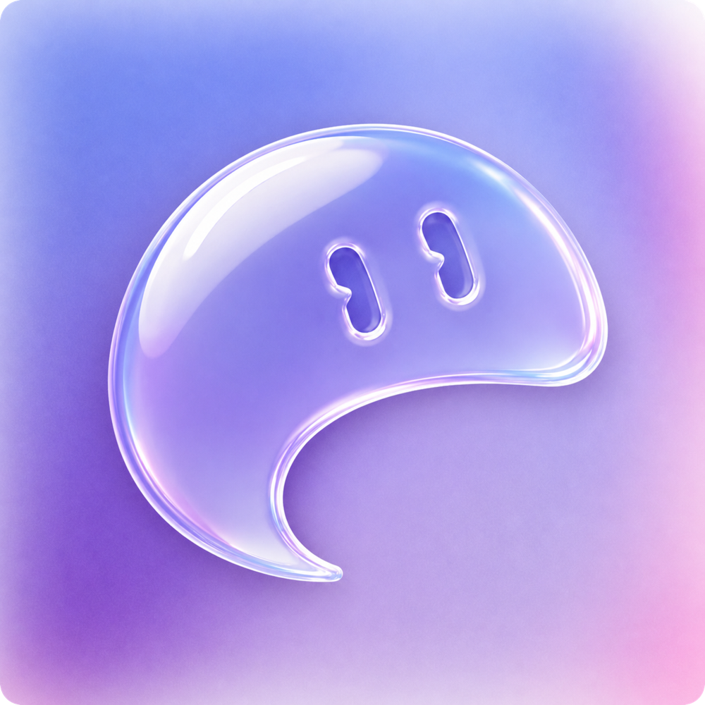
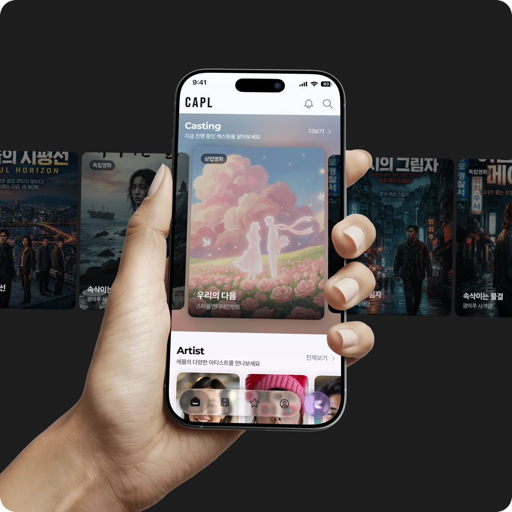
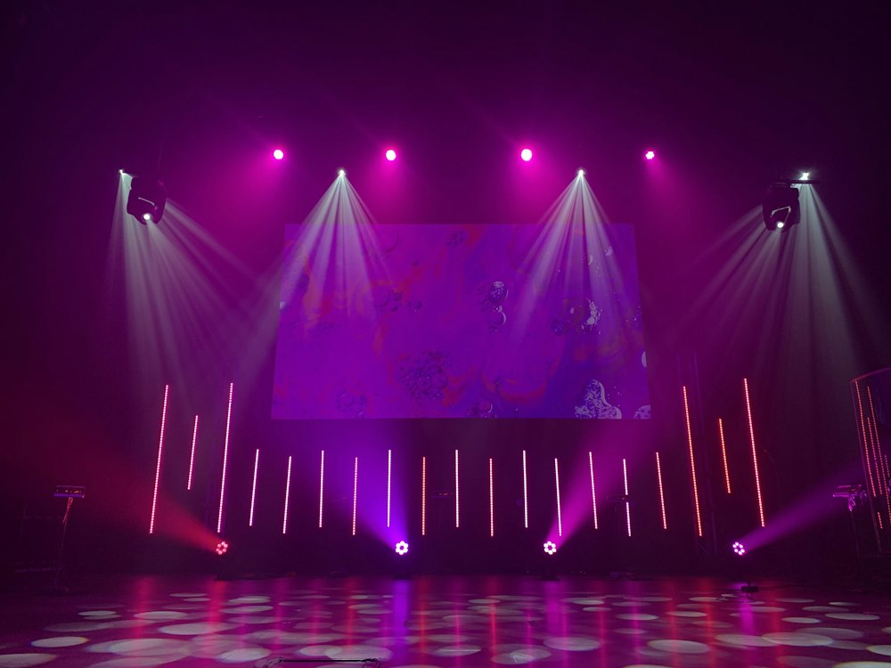

제작사였던 회사는 새로운 배우를 찾기 어려웠고, 배우들은 오디션 정보를 얻기 어려웠습니다. 그래서 배우가 오디션에 지원할수록, 제작사가 찾아볼 수 있는 배우 DB도 함께 쌓이는 구조를 만들고자 했습니다.


Team Project
기획 · 디자인 100%
유저 인터뷰를 통한 문제 정의, 서비스 기획, 디자인 시스템 구축 및 UX/UI 디자인 담당
기획 · 디자인 1명
개발 1명
Output
iOS Application
Android Application
App StoreGoogle Play
01 Desk Research
작품도 배우도 늘었는데, 둘을 잇는 길은 그대로였다
제작사로서 작품을 준비할 때마다 같은 벽에 부딪혔습니다. 이미 알려진 배우는 비싸고, 새로운 얼굴은 찾을 곳이 없었습니다.
이 문제는 제가 먼저 겪었습니다. 영화 현장에 미술소품 담당으로 참여했지만, 제작이 원활히 돌아가도록 제작실장 역할까지 도맡았습니다. 그때 처음 배우 섭외를 맡으면서, 인맥이 없으면 단역 한 명 구하기도 어렵다는 걸 알게 됐습니다. 회사 매니지먼트를 통해 연기학원을 소개받고, 직접 오디션을 보러 가고, 출연료를 하나하나 맞춰야 했습니다.
작품과 활동하는 예술인은 해마다 늘었지만, 캐스팅은 여전히 에이전시와 지인 추천, 학원에 기대고 있었다.
10만 → 20만 명예술활동증명을 받은 활동하는 예술인 2021 → 2025 (4년 반 만에 2배)
출처: 한국예술인복지재단
소속사가 없으면 닿기 힘든 오디션 소식
오디션 정보는 소속사와 인맥 안에서만 돌아, 신인 배우는 기회가 있는지조차 알기 어려웠다.
“오디션 정보는 대체 어디서 얻는 거야?”

제작사는 어려운 신인발굴
제작사와 매니지먼트는 가능성 있는 신인을 찾고 싶어도, 체계적으로 찾아볼 통로가 없었다.
02 Insight
배우는 기회를 원하지만, 노출은 꺼린다
이후에 회사 매니지먼트 소속 배우들과 매니저들의 이야기를 가까이서 들었고, 그 과정에서 붙잡아야 할 지점이 보였습니다. 배우들은 더 많은 오디션 정보를 원하면서도, 프로필과 오디션 활동이 드러나는 것은 조심스러워했습니다. 신인은 알려지고 싶어 했고, 경력 배우는 맡아온 배역 이미지를 지키고 싶어 했습니다.
인터뷰 목적가설 검증
데스크 리서치 확인 · 숨은 맥락 발견
인터뷰 질문5가지 질문
정보 경로 · 지원 기준 · 알고 싶은 정보 · 노출 부담 · 경험 공유
진행 방식비대면 서면 인터뷰
카카오톡 전달 · 인터뷰지 작성 · 원하는 시간에 응답
신인 배우
“어디서든 불러주면 감사하지만, 디렉터에게만 보여주고 싶어요”
Q. 오디션 정보는 어디서 얻나요?
연기학원 공고, 학원 선생님, 학원을 찾아오는 캐스팅 디렉터, 지인
Q. 받는 정보는 얼마나 자세한가요?
단역은 대본 없이 대사 한두 줄과 간단한 상황만 안다
Q. 프로필이 드러나는 게 부담되나요?
지금은 부담 없지만, 이미지가 생기면 부담될 것 같다
Q. 누구에게 가장 보이기 싫나요?
같은 배우들
Q. 오디션 경험은 어떻게 나누나요?
오디션 후기, 감독 스타일을 자유롭게 나눈다
Q. 지원할 때 무엇을 먼저 보나요?
필모그래피가 될 배역인지, 비중이 있는지
Q. 지원 전에 꼭 알고 싶은 정보는?
감독, 주연 배우, 지원자 수 (비용을 내고서라도)
Q. 어떤 기회를 원하나요?
나에게 맞는 배역
경력 배우
“이미지가 중요해서, 말 한마디도 파급력이 있어요”
Q. 오디션 정보는 어디서 얻나요?
소속사와 매니저
Q. 받는 정보는 얼마나 자세한가요?
대본과 감독 정도만 알고, 대부분 구두나 카톡으로 받는다
Q. 프로필이 드러나는 게 부담되나요?
이미지가 중요하고 말 한마디의 파급력이 있어 부담된다
Q. 누구에게 가장 보이기 싫나요?
대중과 업계 전반
Q. 오디션 경험은 어떻게 나누나요?
작은 배역은 친한 신인에게만 묻는다
Q. 지원할 때 무엇을 먼저 보나요?
작품성과 감독
Q. 지원 전에 꼭 알고 싶은 정보는?
몇 부작인지, 같은 배역의 다른 배우가 있는지
Q. 어떤 기회를 원하나요?
나에게 딱 맞는 배역
대상 선정
[선정 기준을 적어주세요]
참가자 구성
[참가자 구성을 적어주세요]
가설 검증 결과
다섯 가지 가설은 모두 맞았고, 하나는 더 구체적이었어요.
검증 완료
오디션 정보는 닫혀 있다
두 배우 모두 정보를 얻는 경로가 한정적이고, 얻는 정보도 부족했다.
홈
상세 조건
검증 완료 · 더 구체적
배우는 기회를 원하지만 노출은 꺼린다
신인도 “디렉터에게만”을 원했다. 꺼리는 건 노출 자체가 아니라, 원하지 않는 사람에게 보이는 것이다.
공개 범위 3단계
검증 완료
정보 공유는 사람마다 다르다
신인은 자유롭게 나누고, 경력 배우는 가려서 나눈다.
커뮤니티 익명 선택
검증 완료
지원 전에 가능성을 알고 싶어 한다
신인은 지원자 수를 “비용을 내고서라도” 보고 싶다고 했다.
경쟁률 (멤버십)
검증 완료
디렉터는 관심이 생기면 더 본다
관심이 생기면 영상과 미팅으로 이어진다.
포트폴리오 3개 · 10개
가설 수정
배우들은 오디션을 못 찾는 게 아니었다
처음엔 흩어진 오디션 정보만 한곳에 모으면 된다고 생각했다. 그런데 인터뷰를 해 보니 막힌 곳은 따로 있었다.
발견 01처음 생각오디션을 찾게 해주면 된다
인터뷰에서 들은 것
“몇 부작인지, 감독과 주연, 지원자 수가 궁금했어요”
경력 배우
바뀐 생각
찾는 것보다 지원을 판단할 정보가 부족했다
설계 반영 사항
기본 정보 · 누구나
판단 정보 · 멤버십
많이 지원하기보다, 나에게 맞는 오디션을 골라 지원
발견 02처음 생각오디션은 합격을 위한 관문이다
인터뷰에서 들은 것
“오디션장에서 있었던 일을 동료와 나눠요”
신인 배우
바뀐 생각
신인에게 오디션은 배우고 성장하는 기회였다
설계 반영 사항
성장 이벤트
배움의 장
익명 커뮤니티
오디션이 없는 날에도 배우로서 자라는 앱
03 Strategy & Structure
지원할수록 배우 DB가 쌓이는 구조
제작사이자 매니지먼트를 함께 운영하는 회사였기 때문에, 이 문제를 풀 조건이 갖춰져 있었습니다.
오디션을 직접 공급할 수 있다
STRENGTH
자사 작품의 오디션을 플랫폼에 바로 열 수 있음
EFFECT
출시 첫날부터 지원할 오디션이 있는 플랫폼
배우를 가까이서 이해할 수 있다
STRENGTH
사내 매니지먼트로 소속 배우와 매일 함께함
EFFECT
배우가 원하는 것과 꺼리는 것을 가까이서 확인
서비스 구조
캐스팅플레이스는 배우 앱과 어드민 두 축으로 설계했고, 두 축을 잇는 것은 프로필입니다. 배우가 앱에서 정해진 형식으로 프로필을 만들면, 어드민에서는 모든 지원자를 같은 기준으로 비교할 수 있습니다.
1
Actor App
배우 앱
진행 중인 오디션을 탐색하고, 정해진 형식으로 프로필을 만들어 지원합니다.
2
Profile
프로필
두 축을 잇는 공통 데이터. 모든 지원자가 같은 형식으로 쌓입니다.
3
Admin
어드민
오디션을 등록·관리하고, 지원자를 같은 기준으로 비교하며 배우 DB를 찾아봅니다.
지원할수록 쌓이는 선순환
오디션이 열리면 배우가 지원하고, 지원이 쌓일수록 제작사가 찾아볼 수 있는 배우 DB가 커집니다. 커진 DB는 다시 신인 발굴과 다음 오디션으로 이어집니다.
제작사
배우
배우 DB
오디션 공급
프로필로 지원
신인 추천
신인 발굴지원자 비교오디션 정보공정한 지원프로필 노출프로필 축적조건 검색멤버십
지원할수록 쌓이는 배우 DB
제작사신인 발굴 · 지원자 비교
배우오디션 정보 · 공정한 지원 · 프로필 노출
배우 DB프로필 축적 · 조건 검색 · 멤버십
04 Design Decisions
디자인 결정
As-Is
오디션 정보가 소속사·인맥 안에서만 돌아 신인은 기회가 있는지도 모름
#정보 폐쇄 #기회 불평등
To-Be
진행 중인 오디션을 한곳에
소속사가 없어도 지금 열린 오디션을 바로 확인하고 지원할 수 있는 홈
#정보 개방 #누구나 지원
As-Is
지원하면 프로필과 활동이 드러나 동료와 업계의 시선이 부담
#노출 부담 #이미지 관리
To-Be
보여줄 만큼만 보여주는 프로필
[실제 기능에 맞게 수정] 공개 범위를 직접 정해 원하는 곳에만 프로필을 보여줌
#노출 부담 완화 #원하는 만큼만
As-Is
제작사는 추천받은 배우에만 의존하고 지원자를 비교할 기준이 없음
#발굴 한계 #추천 의존
To-Be
같은 기준으로 비교하는 어드민
정해진 형식의 프로필로 지원자를 비교하고 지원할수록 배우 DB가 쌓임
#신인 발굴 #배우 DB
디자인 시스템
Figma에서 실제로 쓰인 값을 모아 정리했습니다. 밝은 화면을 바탕으로, 보라 한 가지를 포인트로 씁니다.
Typography
Pretendard 프리텐다드
Bold / SemiBold / Medium · 영문 섹션 제목은 Montserrat Bold